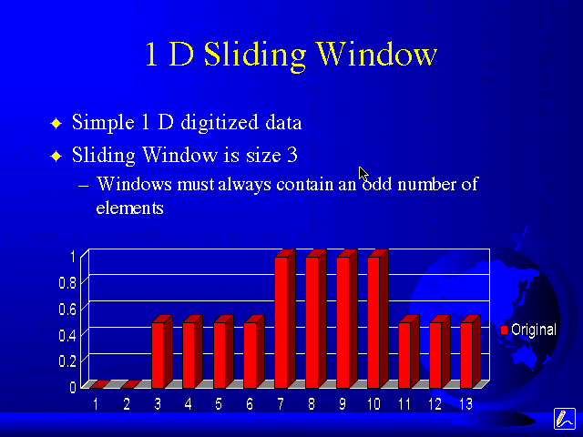

What is a Sliding Window Filter?

A window can be thought of as a box with "entities" in it.
You do something with these entities and then you remove one entity from, say, the left and you add in a new entity from, say, the right.
You repeat the process on these entities, sliding one out, and a new one in.
Then repeat the process over again.
Take for example the image below from my Microsoft PowerPoint presentation.

Lets assume that these are some sample digitized data.
You are sending this data to your boss, whose office is a few floors down from you.
Your offices are running on a 10base2 UTP Ethernet.
The janitor, who is in the wiring closet where your Ethernet HUB is located, decides to arch-weld his favorite mophead to an iron Johnson Bar, because he's sick and tired of the wooden handles breaking.
You, however, don't know this.
But you wonder why the office lights repeatedly flicker.
Your boss's computer then receives this data...

This is meaningless to the computer, and your boss is not going to be happy.
Putting aside the humorous circumstance, how could you remove the two impulses at 4 and 12, and preserve the step/edge at 7?
Let's center our window (or "box") on point 2. And lets use a window of size N=3.
Window 1
- 0, 0, .5
- Sort these values: 0, 0, .5
- Median = 0
- Now, write that median value to a new, separate output file at the second position.
- Increment the window to the right, so that it is now centered on point 3.
Window 2
- 0, .5, 1
- Sorted: 0, .5, 1
- Median = .5
- Write this new median value to the output file at the third position.
- Increment window to the right. Now it's centered on point 4.
Window 3
- .5, 1, .5
- Sorted: .5, .5, 1
- Median = .5
- Write this new median value to the output file at the fourth position.
- Increment window. Now it's centered on point 5.
Window 4
- 1, .5, .5
- Sorted: .5, .5, 1
- Median = .5
- Write this new median value to the output file at the fifth position.
- Increment window. Now it's centered on point 6.
Window 5
- .5, .5, 1
- Sorted: .5, .5, 1
- Median = .5
- Write this new median value to the output file at the sixth position.
- Increment window. Now it's centered on point 7.
Window 6
- .5, 1, 1
- Sorted: .5, 1, 1
- Median = 1
- Write this new median value to the output file at the seventh position.
- Increment window. Now, it's centered on point 8.
Window 7
- 1, 1, 1
- Sorted: 1, 1, 1
- Median = 1
- Write this new median value to the output file at the eighth position.
- Increment the window, and so on...
Sorry about the length of the previous excercise, but I felt it was necessary in order the understand the idea of a sliding window.
Well, if you were observant (though, I know it's tough because the graph is about 4 screens up), you'd see that the impulses were removed completely, and the step was preserved perfectly.
tassone@bucknell.edu